Relational¶
Sector-relative and fingerprint-space CWT scorers. The relational arc
asks: instead of ranking a stock by its CWT divergence, rank it by
how its scalogram differs from its sector's, or from its k nearest
neighbours in the universe at this moment. Source under
apps/relational/src/relational/.
The six scoreboard winners¶
These are the canonical configurations preserved at
Output/relational-{strategy}.json and rebuilt by
apps/relational/scripts/build_canonical_checkpoints.py. Five pin to
the Phase-2 21-ticker mega-cap universe (where the val Sharpe
lifts to the 1.07–1.13 band); the sixth — velocity — pins to the
wider stooq_us_long ~312-name set.
Idea A — Empirical sector excess¶
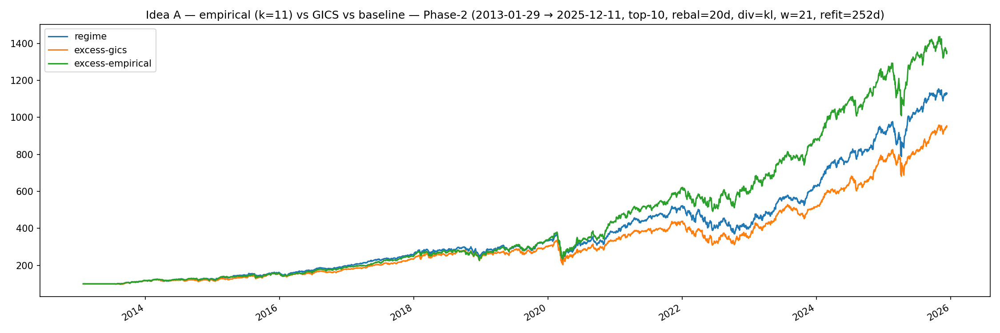
The simplest relational primitive: a stock's CWT divergence net of its sector's. By the time you've subtracted the sector-wide regime shift, what remains is the stock doing something its sector isn't — which is exactly the kind of idiosyncratic move a top-N selector should be chasing. The visible kink mid-chart is the tape rotating into a post-stagflation regime where the sector overlay added more value than it usually does.
Idea B — Analog kNN¶
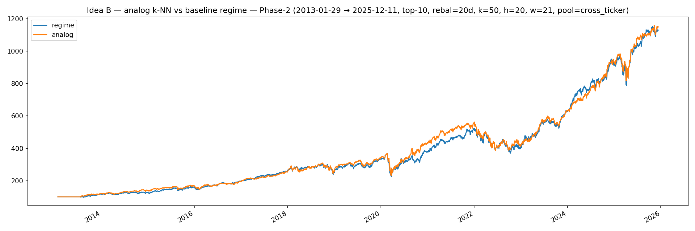
For each rebalance bar, find the k=50 historical bars whose cross- ticker fingerprint vectors are closest to now, and use their realised forward returns as the score. This is the only one of the six scoreboard winners whose val Sharpe (1.146) exceeds its train Sharpe (1.032) on the Phase-2 split — a positive train-to-val delta is rare enough in this codebase that the row sits alone on the Leaderboard. It's also the strategy whose val edge collapses most on a wider universe, see the universe-shift finding.
Idea C — Farthest¶
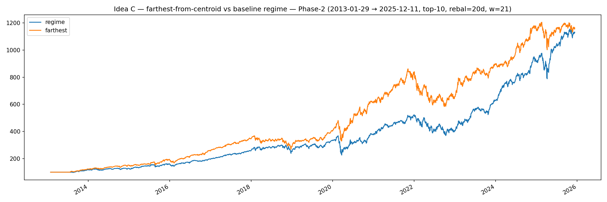
Pick the names whose fingerprints are farthest from the rest of the universe — the most idiosyncratic regime states. Catastrophic in-sample Sharpe (1.32 train) and catastrophic train-to-val gap (−0.49) both at once. The same thing the chart is showing visually: big, jagged, mean-reverting equity moves that look like skill on the training half and noise on the val half.
Idea D — Diversified greedy thinning¶
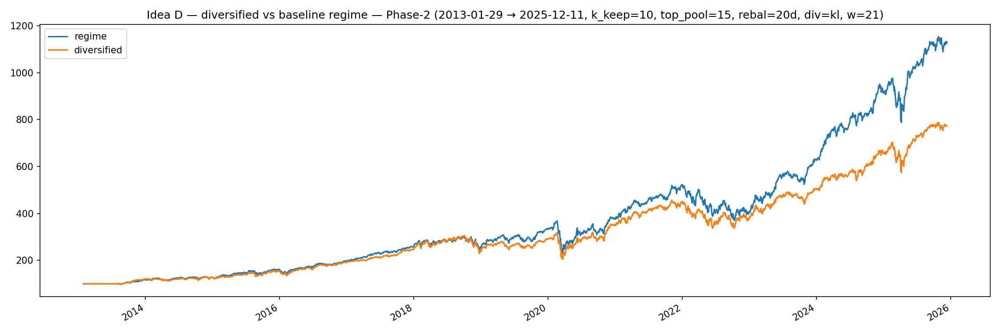
Rank by raw divergence, then greedy-farthest-first thin to the final basket so the picks aren't five tech names that all moved together. Best non-cross_ticker val Sharpe of the family (+1.00) and the only Phase-2 arm besides analog cross_ticker that crosses 1.0 OOS.
Velocity¶
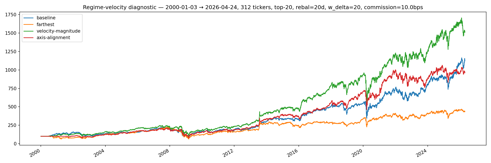
Score by the rate of change of fingerprint position rather than the position itself — names whose regimes are accelerating relative to their own history. Trained and run on the wider 312-ticker pool where the other five strategies degrade; the canonical velocity checkpoint is the relational arm that survives outside Phase-2.
GMM clustering¶
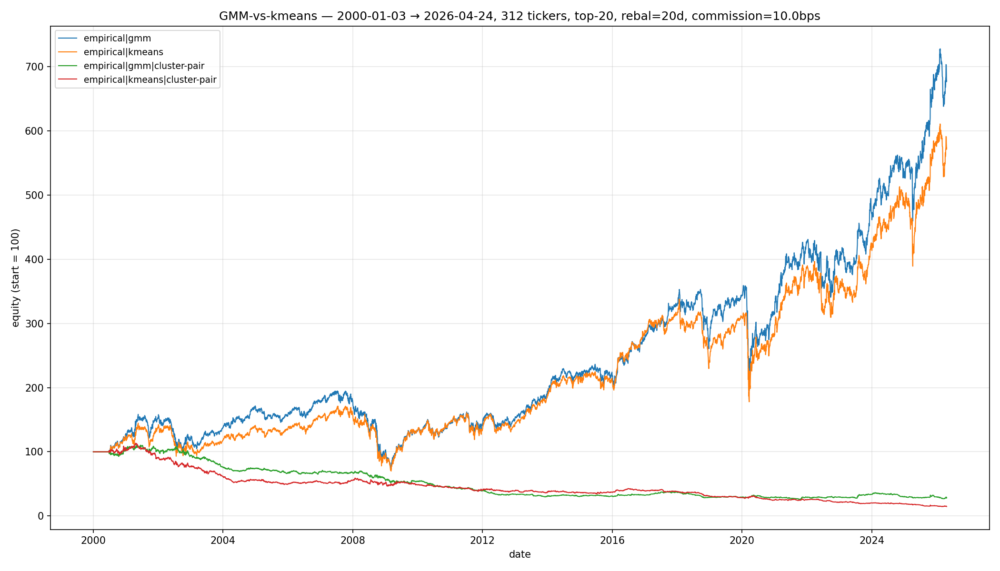
The clustering basis matters: GMM gives soft cluster membership, which the scoring head can blend rather than commit to one assignment. Visible here as smoother equity through regime transitions where k-means snaps abruptly between cluster labels.
The five framings that didn't survive¶
A research arc this long produces falsified ideas as well as kept ones. Preserved here so future-us doesn't re-run them blindly.
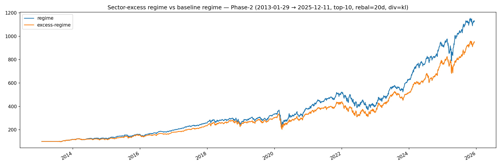
Sector-excess as a pure scoring primitive (without the cluster overlay). Captures the same insight as Idea A but underperforms the empirical-sectors composite — the sector signal needs the empirical cluster-aware blending to lift.
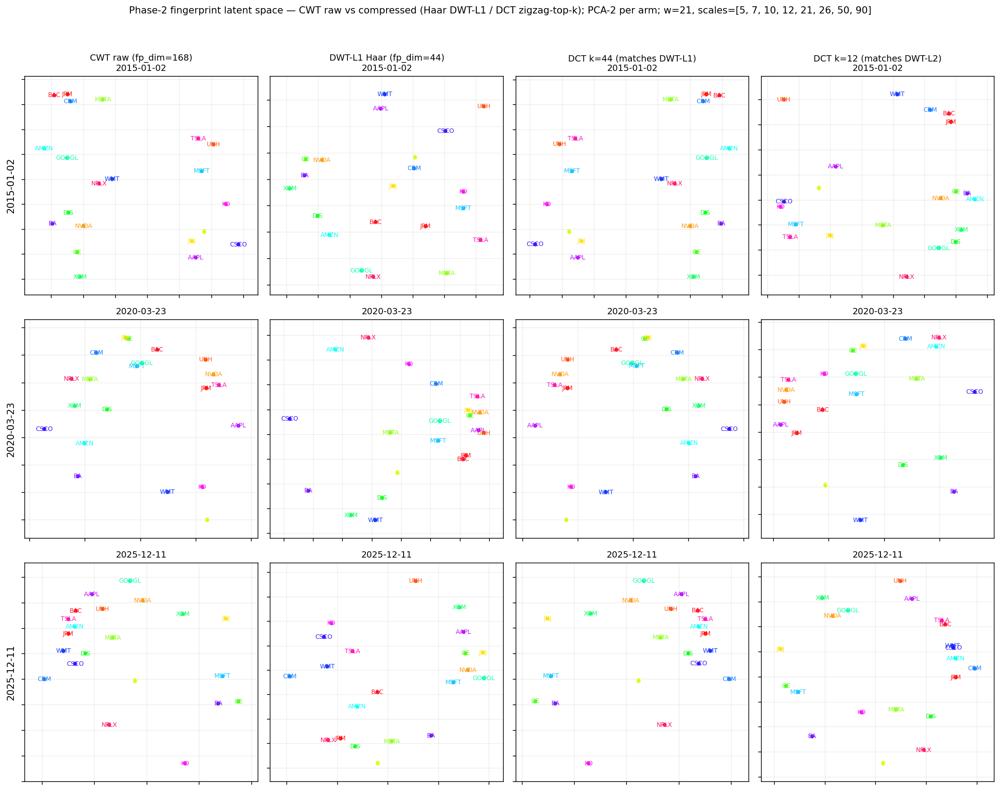
Fingerprint dimensionality sweep. Shows the moment we considered DWT compression as a generic fingerprint shrink; full eight-arm walk-forward later reversed the verdict. A separate polar Morlet experiment also failed the Phase-2 OOS gate from the orthogonal direction — swapping the wavelet family rather than compressing the fingerprint — leaving the canonical Ricker fingerprint unchanged.
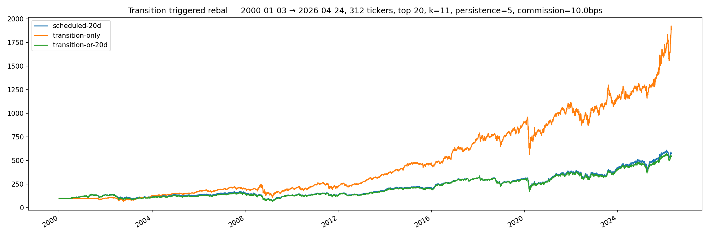
Transition-triggered live cadence. Daily evaluation, only act when target weights diverge enough from current. The mechanism is sound but the rebal-days sweep that gates it is in the TODO.
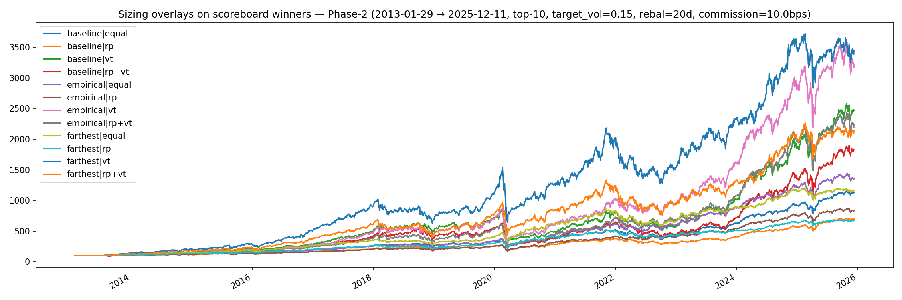
Vol-target sizing overlays. Adding diagonal-cov vol-target on top of
the relational selector — neutral on Sharpe net of commission, see
the leaderboard's Vol-target overlay row.
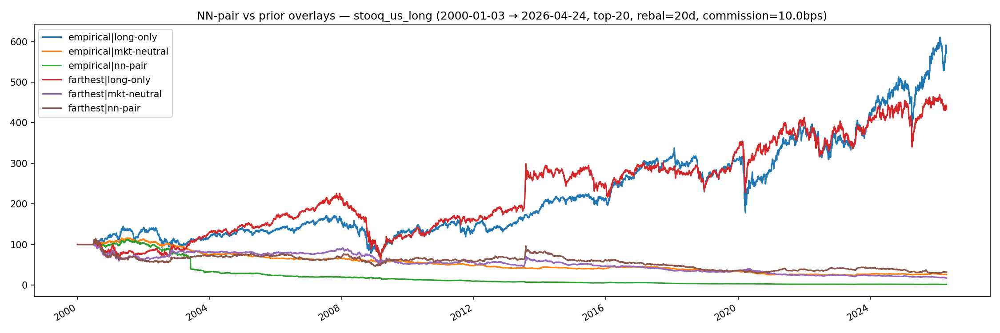
NN-pairs. Pair each stock with its nearest neighbour in fingerprint space and trade the spread. Falsified at the Phase-2 walk-forward stage — the spread reverts, but not on a horizon long enough to clear two-sided commission. Listed as one of the strategies the relational checkpoint family does not expose.
Live trading¶
uv run python apps/relational/scripts/build_canonical_checkpoints.py
uv run ss-relational live --params Output/relational-empirical.json --dry-run
uv run ss-relational live --params Output/relational-empirical.json --live
Same four risk rails as regime live, sharing
ss_portfolio.broker.AlpacaBroker.
Architecture in
CLAUDE.md.